Overview
GoDesk is a smart desk gadget that reduces the sedentary behavior in white-collar workers by nudging the users to sit less.
My Role
UX Designer
Research, Ideation, Prototyping, Visual Design, Evaluation
Team members
Akshay Yelmar, Abhinav Sikharam, Ashish Durgude
Tools used
Sketch, Principle, InVision, Photoshop, Blender
Duration
6 weeks
PROBLEM
The physical inactivity in white-collar workers is observed mainly due to the sedentary nature of their jobs, which makes it difficult to stay active during office hours and avoid health risks such as developing type 2 diabetes.
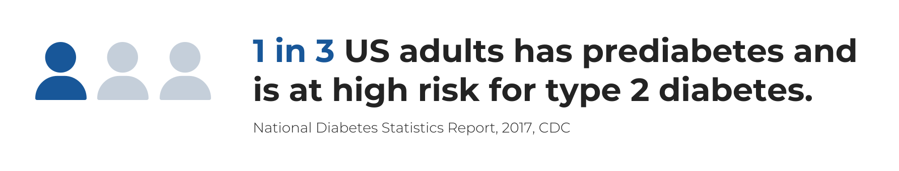

Why white-collar workers?
According to the American Heart Association, Sedentary jobs have increased by 83% since 1950.
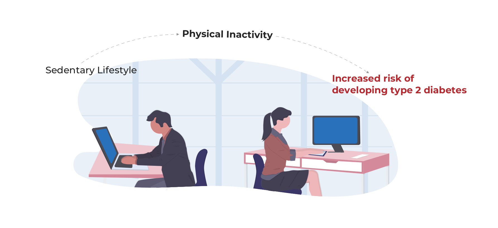Our Design Challenge
How might we design a technology to address physical inactivity in a white-collar worker?
SOLUTION
Our design solution is a smart desk gadget which nudges the user by emitting colored light signals in brief intervals and keeps track of user’s physical activity. Watch the following demo video to see how it works.
Unobtrusive subtle nudges
The user gets notified via device if the user has been sitting at the desk for too long.

Recommended activities
The app recommends various activities to the user based on their sitting pattern and physical profile.
Focus on meaningful insights
The users can track their activity data using the app. The app interface provides users with simple meaningful insights.

Here is the detailed process that we followed to come up with our final design solution:
DISCOVER
We started off with our initial research about the problem space by going through multiple research papers, articles online about prevention of Type 2 Diabetes. We also interviewed two experts from this field who provided their perspectives on such a complex issue and helped us analyze the depth of the problem. Our aim was to find out what has been done about the problem? What are the persistent challenges? What things worked? What did not work and why?
From these activities, we were able to familiarize ourselves with the problem which helped us plan our user research.
User Interviews
We brainstormed and formulated the interview protocol with certain objectives for what type of data we were looking for. We then conducted semi-structured interviews with the six participants that matched our target user group - 'white-collar workers'. During our interviews, we focused on learning following things about the target user:
- Food habits
- Knowledge about Type 2 Diabetes
- Level and types of Physical activity
- Stress factors
- Motivations/frustrations associated with use of existing technology in this space
Observations
We also conducted six observations where we observed the behavior of our target users in their natural setting. During each observation, we took down the notes and depicted the scenes in the form of rough sketches to record our sessions. The observations helped us analyze the behavior pattern of the users in the office environment.
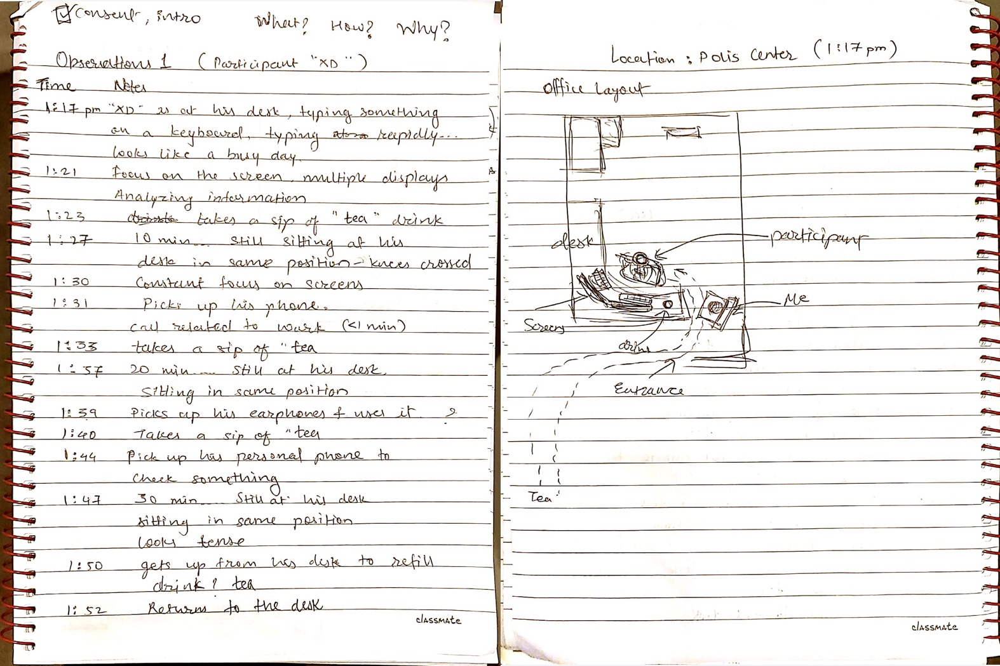
Analyzing the collected data
Once we finished our data collection, we performed analysis method to make sense out of all the information that was gathered. We collaboratively conducted affinity diagramming session to find emergent themes and patterns among the data.
We discovered following three key problem areas from our primary research:
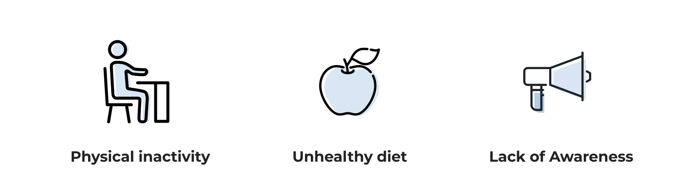We then constructed empathy map from the data collected during our user interviews. The empathy map exercise helped the team to empathize with our target users and gain better understanding of their behavior, motivations and frustrations.
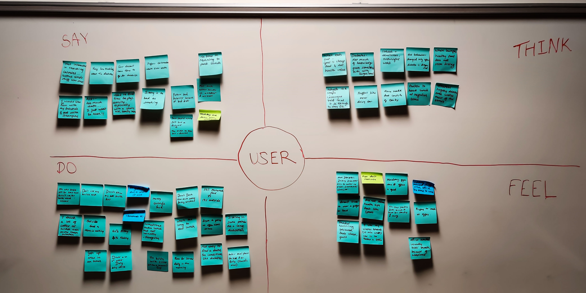
We then took a closer look at the empathy map and analyzed data collected from user interviews. Based on that data, we were able to formulate two user personas that represented our potential target users and captured their needs and frustrations. These personas served as a reference point for all of our next design activities.
User Personas
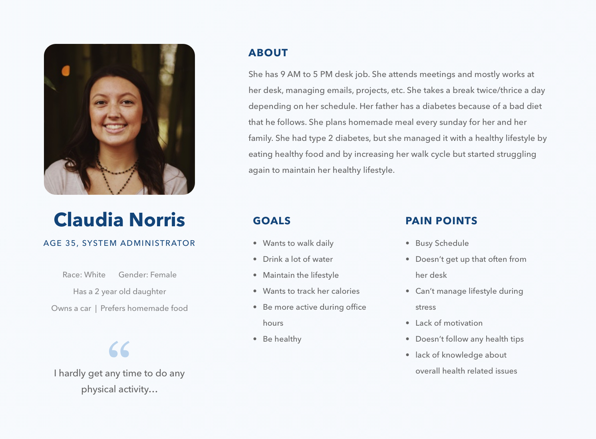
EXPLORE
The findings generated from our data collection phase informed our ideation phase. In this phase, we conducted three brainstorming sessions to generate wide range of ideas. During our brainstorming sessions, we formulated several 'how might we' statements to give directions to our ideation activity. For these 'How might we' statement we utilized the insights from our research.
- HMW help users to follow healthy diet?
- HMW increase awareness and knowledge about t2 diabetes in white-collar workers?
- HMW notify users to take breaks after regular intervals?
- HMW help users track their eating habits without being intrusive?
Once the we had a list of ideas to choose from, we discussed the merits of each idea and shortlisted following three design concepts that had great potential to be explored further:
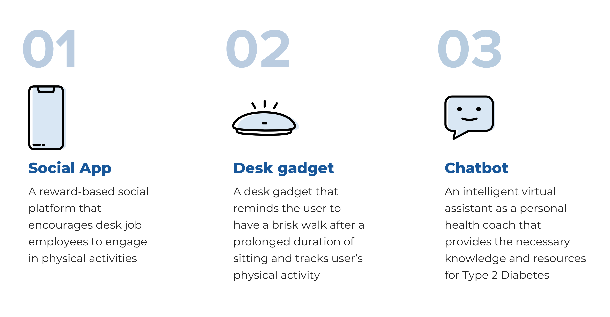We then explored each idea in more detail and evaluated it from business as well as technological feasibility standpoint. After thoughtful discussions and weighing the trade-offs of pursuing each idea we concluded to move forward with our second design concept. We revisited our research insights and target user personas to refine our design challenge to the following opportunity statement:
How might we design a technology to address physical inactivity in a white-collar worker?
We moved on to creating storyboards representing critical use case scenarios of our idea for each user persona.
Exploring the design idea in the form of concept scenarios helped us to understand and visualize user's behavior and the key interactions between the user and the product. It was crucial for the team to have a shared understanding of the final design direction which shaped our UX strategy for the product.
Final design direction for the MVP
A smart desk gadget that nudges user to sit less and helps track activities with the help of a mobile app.
User journey
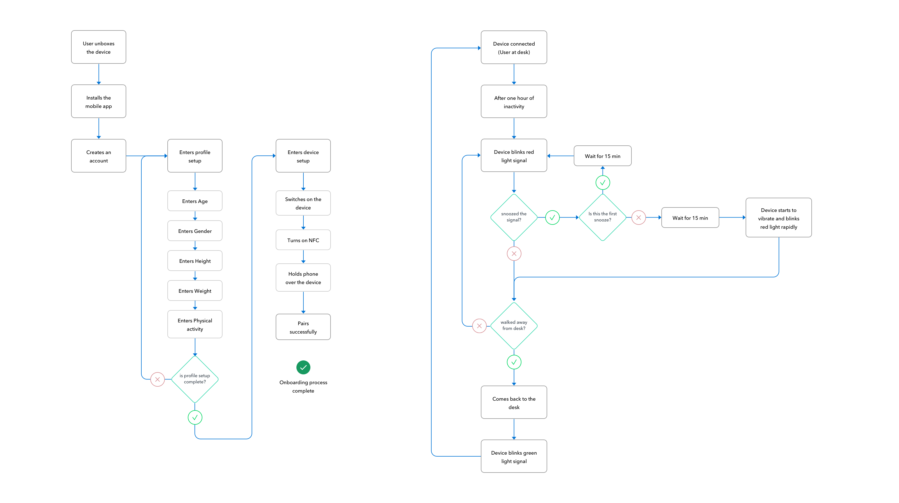Early sketches
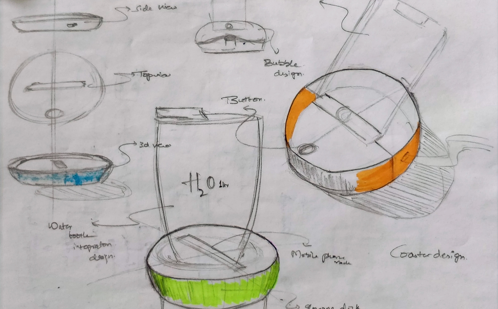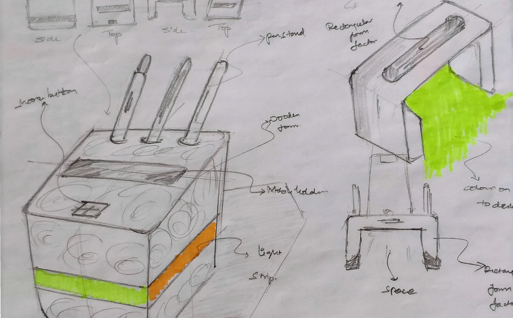
App wireframes
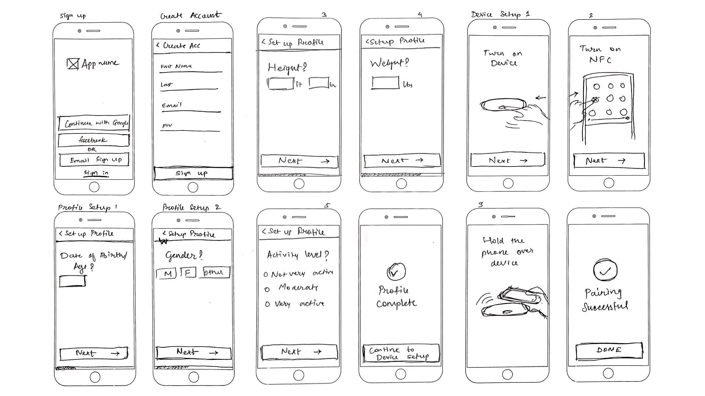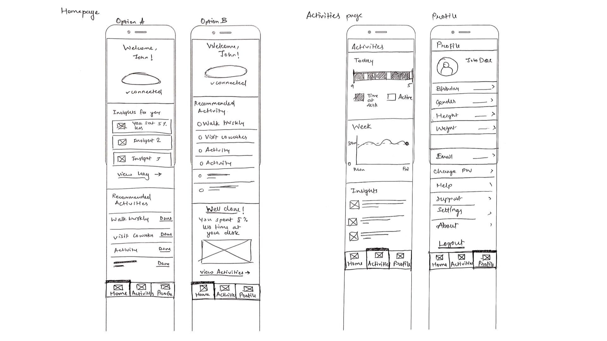
DEFINE
Once we had a clear picture of how the device and app were going to work together, we materialized our explorations into a prototype. For Device prototype, we 3D printed the model and placed the required electric circuits. For the app prototype, we converted our wireframes to the high-fidelity mockups and created an interactive prototype.
Device Prototype
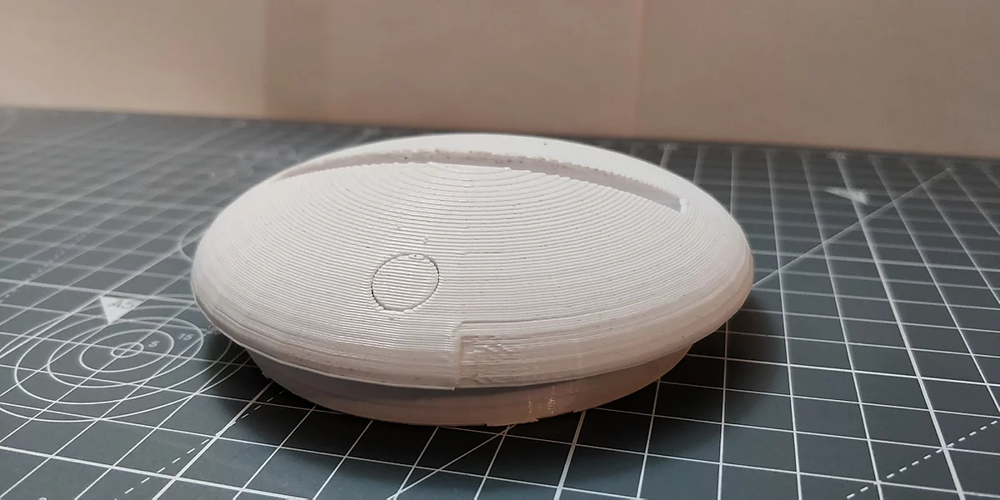
App Prototype
Prototype in action
User onboarding experience
Nudging the user via device
EVALUATE
Since we had a novel design direction, we wanted to test it out with our target users to gather useful feedback and to find out key usability issues. The evaluation of the design was necessary in order to learn how real users were going to interact with the system. Once the prototype was ready for testing, we had some objectives for the evaluations and we needed answers to the following questions:
- How are the users feeling while using the product? angry, frustrated, motivated? can we measure the emotional aspect of the design?
- Is the nudge enough to move them from one place?
- What are their thoughts on visual feedback/light indicators?
- Does it address their pain points? Did the system behave as per their expectations?
- Is feedback correctly understood by the user? measure the learnability aspect.
- How was their first-time experience? were the instructions clear? was it easy to set up?
Think-aloud exercise
We conducted think-aloud exercise with our participants using the prototype. Participants were asked to express their thoughts while interacting with the prototype. For this, we used Wizard of oz technique to control the behavior of the prototype as per user inputs.
Key findings
From our think-aloud sessions with the users, we recorded following key findings:
- During the onboarding process, the system should provide additional information to give context to why the height/weight data of the user is being asked.
- The units of measurements for entering height and weight should offer alternatives to the user. For Example, offer both options of entering height in centimeters as well as in feet and inches.
- The system did not inform the first-time user about the time duration of the snooze. The user wanted to change the time duration of the snooze functionality which is currently fixed at 15 minutes.
- Users found the activities section easy to understand and were successfully able to track their activities. We received positive feedback from the user on the insights provided in the activity section.
Overall, the concept was very well received by the users and we gained actionable insights from our evaluations.
Future directions
The next step for this project would be to work on the insights gathered from evaluation methods and prioritize the design changes.
- Add animations – Emotional Interaction
- Improve insights
- Suggest healthy habits
Things learned
This project was a great learning experience for me. I learned how to deliver a user-centered solution while envisioning the end to end product strategy. The challenging part about this project was to comprehend the complexity of the issue and then to narrow it down to focus on the core underlying problem that we wanted to solve. When we had multiple design directions to choose from, it was tempting to add features to our product. However, I learned to let those things go to focus on one core functionality that defined the identity of our product.
This was the first time I had worked on a tangible product. I stepped out of my comfort zone of designing for screens and applied the classroom learnings to define the interactions of a physical device.